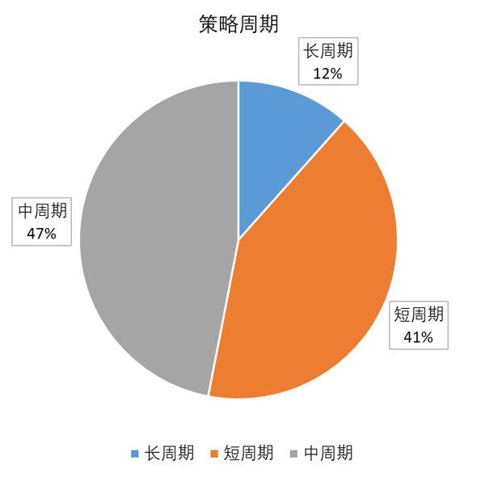
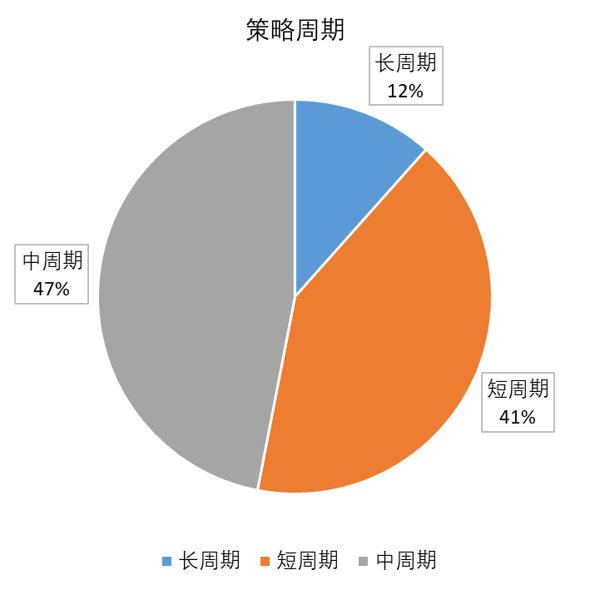

CTA量化策略主要包括：趋势追踪、趋势反转、区间震荡、均值回归等，其中尤以趋势追踪最为常用
均值回归追求高胜率，虽然单笔交易收益率并不高，但可以广泛应用于跨期、跨品种配对交易，有利于扩大交易范围
由于大宗商品价格运行的内在机制，趋势追踪往往能取得非常显著的正收益，而且期货交易可以采用多空策略来进一步扩大交易机会
Hurst, Yao and Pedersen (2014)证明了趋势投资法是普世的，在不同的年代不同的资产类别不同的经济周期下都是合适的

| 原始曲线 | 调整曲线 | |
|---|---|---|
| 盈亏比 | 1.49 | 1.71 |
| 收益率 | 30.6% | 26.8% |
| 最大回撤 | 5.5% | 3% |
| 收益率/最大回撤 | 5.6 | 8.8 |


品种选择中，趋势性比较明显的品种加大权重，权重配比采取动态追踪、实时调整，实现利润最大化、回撤最小化。但考虑到趋势行情只占到1/4左右，其余3/4属于震荡行情，还配有相应策略保证震荡市中有小幅盈利，以平滑净值曲线。
策略考虑了日内交易手续费和买卖滑点等问题，合理配置了策略频率，中周期和长周期策略超过了一半。在充分保证模型灵敏度的同时，尽量规避交易规则频繁改动对资金曲线的影响。
信号触发依据不同频率的K线和均线系统，2小时以内中频信号触发超过2/5。日级别和周级别的低频信号主要用于捕捉大级别机会，并不过度依赖快进快出的高频交易。
 
